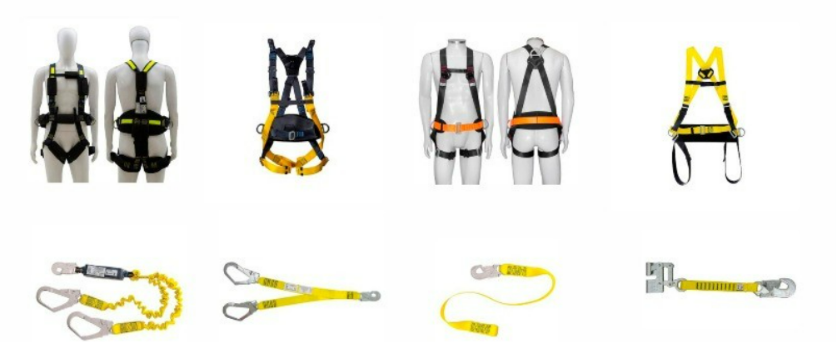
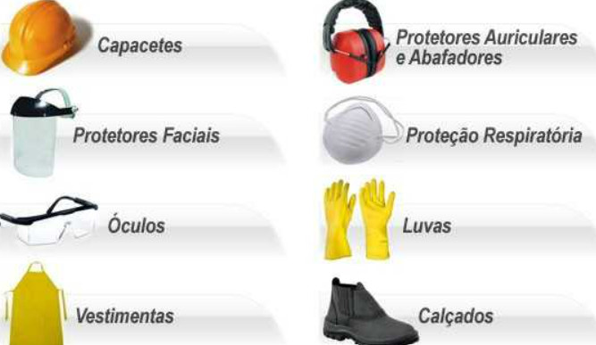

Sistemas Fotovoltaicos.
O objetivo desta Norma Regulamentadora - NR é estabelecer os requisitos para aprovação, comercialização, fornecimento e utilização de Equipamentos de Proteção Individual - EPI.

As disposições desta NR se aplicam às organizações que adquiram EPI, aos trabalhadores que os utilizam, assim como aos fabricantes e importadores de EPI.

Para os fins de aplicação desta NR considera-se EPI o dispositivo ou produto de uso individual utilizado pelo trabalhador, concebido e fabricado para oferecer proteção contra os riscos ocupacionais existentes no ambiente de trabalho.

O MTE desenvolveu um Manual de auxílio na interpretação e aplicação da NR06, onde podemos aprofundar nossos conhecimentos sobre equipamentos de proteção individuais e coletivos.
Não é difícil entender a importância para o instalador fotovoltaico em fazer a capacitação e treinamento para conhecer e aplicar a NR06, já que o mesmo trabalha a maior parte do tempo em situações de risco.
Busque se capacitar em NR06, antes de começar a trabalhar, pois sua vida é seu bem mais importante.
Para a NR06, considera-se:
Responsabilidades do trabalhador, quanto ao EPI:
- a) usar o fornecido pela organização;
- b) utilizar apenas para a finalidade a que se destina;
-
- c) responsabilizar-se pela limpeza, guarda e conservação;
-
d) comunicar à organização quando extraviado, danificado ou qualquer alteração que o torne impróprio para uso; e
e) cumprir as determinações da organização sobre o uso adequado.
As empresas devem realizar treinamento acerca do EPI a ser fornecido, quando as características do EPI requeiram, observada a atividade realizada e as exigências estabelecidas em normas regulamentadoras e nos dispositivos legais.
LISTA DE EQUIPAMENTOS DE PROTEÇÃO INDIVIDUAL
- A - EPI PARA PROTEÇÃO DA CABEÇA
- A.1 - Capacete
- A.2 - Capuz ou balaclava
- B - EPI PARA PROTEÇÃO DOS OLHOS E FACE
- B.1 - Óculos
- B.2 - Protetor facial
-
B.3 - Máscara de solda para proteção dos olhos e face contra impactos de partículas volantes, radiação ultravioleta, radiação infravermelha e luminosidade intensa.
- C - EPI PARA PROTEÇÃO AUDITIVA
- D - EPI PARA PROTEÇÃO RESPIRATÓRIA
- D.1 - Respirador purificador de ar não motorizado
- D.2 - Respirador purificador de ar motorizado
- D.3 - Respirador de adução de ar tipo linha de ar comprimido
- D.4 - Respirador de adução de ar tipo máscara autônoma
- D.5 - Respirador de fuga
- E - EPI PARA PROTEÇÃO DO TRONCO
- E.1 - Vestimentas
- E.2 - Colete à prova de balas de uso permitido para vigilantes que trabalhem portando arma de fogo, para proteção do tronco contra agentes mecânicos.
- F - EPI PARA PROTEÇÃO DOS MEMBROS SUPERIORES
- F.1 - Luvas
- F.2 - Creme protetor de segurança para proteção dos membros superiores contra agentes químicos.
- F.3 - Manga
- F.4 - Braçadeira
- F.5 - Dedeira para proteção dos dedos contra agentes abrasivos e escoriantes.
- G - EPI PARA PROTEÇÃO DOS MEMBROS INFERIORES
- G.1 - Calçado
- G.2 - Meia para proteção dos pés contra baixas temperaturas.
- G.3 - Perneira
- G.4 - Calça
- H - EPI PARA PROTEÇÃO DO CORPO INTEIRO
- H.1 - Macacão
- H.2 - Vestimenta de corpo inteiro
- I - EPI PARA PROTEÇÃO CONTRA QUEDAS COM DIFERENÇA DE NÍVEL
- I.1 - Cinturão de segurança com dispositivo trava-queda para proteção do usuário contra quedas em operações com movimentação vertical ou horizontal.
- I.2 - Cinturão de segurança com talabarte